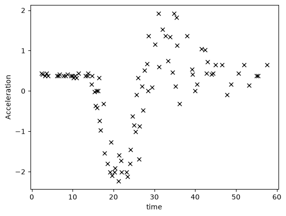
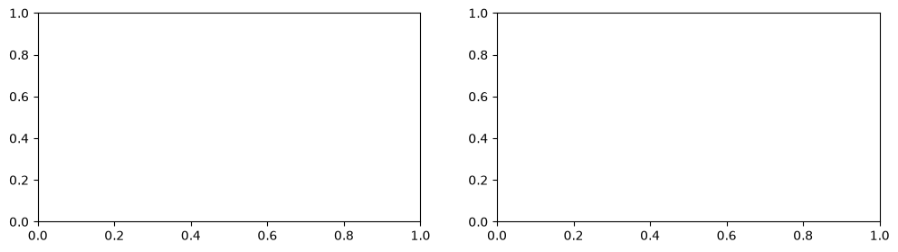
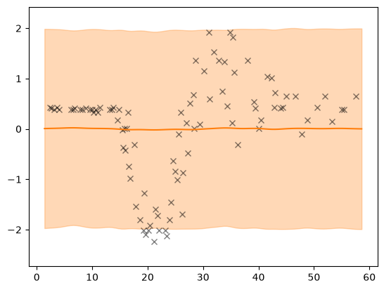

Why GPflux is a modern (deep) GP library#
In this notebook we go over some of the features that make GPflux a powerful, deep-learning-style GP library. We demonstrate the out-of-the-box support for monitoring during the course of optimisation, adapting the learning rate, and saving & serving (deep) GP models.
Setting up the dataset and model#
Motorcycle: a toy one-dimensional dataset#
[1]:
import matplotlib.pyplot as plt
import numpy as np
import pandas as pd
import tensorflow as tf
tf.get_logger().setLevel("INFO")
WARNING: All log messages before absl::InitializeLog() is called are written to STDERR
I0000 00:00:1790697072.603158 3037 cudart_stub.cc:31] Could not find cuda drivers on your machine, GPU will not be used.
I0000 00:00:1790697072.649190 3037 cpu_feature_guard.cc:227] This TensorFlow binary is optimized to use available CPU instructions in performance-critical operations.
To enable the following instructions: AVX2 FMA, in other operations, rebuild TensorFlow with the appropriate compiler flags.
WARNING: All log messages before absl::InitializeLog() is called are written to STDERR
I0000 00:00:1790697074.182966 3037 cudart_stub.cc:31] Could not find cuda drivers on your machine, GPU will not be used.
[2]:
def motorcycle_data():
"""
The motorcycle dataset where the targets are normalised to zero mean and unit variance.
Returns a tuple of input features with shape [N, 1] and corresponding targets with shape [N, 1].
"""
df = pd.read_csv("./data/motor.csv", index_col=0)
X, Y = df["times"].values.reshape(-1, 1), df["accel"].values.reshape(-1, 1)
Y = (Y - Y.mean()) / Y.std()
return X, Y
X, Y = motorcycle_data()
plt.plot(X, Y, "kx")
plt.xlabel("time")
plt.ylabel("Acceleration")
[2]:
Text(0, 0.5, 'Acceleration')

Two-layer deep GP#
To keep this notebook focussed we are going to use a predefined deep GP architecture gpflux.architectures.build_constant_input_dim_deep_gp for creating our simple two-layer model.
[3]:
import gpflux
from gpflow.keras import tf_keras
from gpflux.architectures import Config, build_constant_input_dim_deep_gp
from gpflux.models import DeepGP
config = Config(
num_inducing=25, inner_layer_qsqrt_factor=1e-5, likelihood_noise_variance=1e-2, whiten=True
)
deep_gp: DeepGP = build_constant_input_dim_deep_gp(X, num_layers=2, config=config)
E0000 00:00:1790697076.885077 3037 cuda_platform.cc:52] failed call to cuInit: INTERNAL: CUDA error: Failed call to cuInit: UNKNOWN ERROR (303)
Training: mini-batching, callbacks, checkpoints and monitoring#
When training a model, GPflux takes care of minibatching the dataset and accepts a range of callbacks that make it very simple to, for example, modify the learning rate or monitor the optimisation.
[4]:
# From the `DeepGP` model we instantiate a training model which is a `tf.keras.Model`
training_model: tf_keras.Model = deep_gp.as_training_model()
# Following the Keras procedure we need to compile and pass a optimizer,
# before fitting the model to data
training_model.compile(optimizer=tf_keras.optimizers.Adam(learning_rate=0.01))
callbacks = [
# Create callback that reduces the learning rate every time the ELBO plateaus
tf_keras.callbacks.ReduceLROnPlateau("loss", factor=0.95, patience=3, min_lr=1e-6, verbose=0),
# Create a callback that writes logs (e.g., hyperparameters, KLs, etc.) to TensorBoard
gpflux.callbacks.TensorBoard(),
# Create a callback that saves the model's weights
tf_keras.callbacks.ModelCheckpoint(filepath="ckpts/", save_weights_only=True, verbose=0),
]
history = training_model.fit(
{"inputs": X, "targets": Y},
batch_size=12,
epochs=200,
callbacks=callbacks,
verbose=0,
)
WARNING:tensorflow:Model failed to serialize as JSON. Ignoring... Cannot pickle Tensor -- its value is not known statically: Tensor("gp_0/Identity:0", shape=(), dtype=float64).
I0000 00:00:1790697078.423310 3037 profiler_session.cc:117] Profiler session initializing.
I0000 00:00:1790697078.423340 3037 profiler_session.cc:132] Profiler session started.
I0000 00:00:1790697078.423371 3037 profiler_session.cc:150] Profiler session tear down.
---------------------------------------------------------------------------
TBNotInstalledError Traceback (most recent call last)
Cell In[4], line 17
13 # Create a callback that saves the model's weights
14 tf_keras.callbacks.ModelCheckpoint(filepath="ckpts/", save_weights_only=True, verbose=0),
15 ]
16
---> 17 history = training_model.fit(
18 {"inputs": X, "targets": Y},
19 batch_size=12,
20 epochs=200,
File /opt/hostedtoolcache/Python/3.11.16/x64/lib/python3.11/site-packages/tf_keras/src/utils/traceback_utils.py:70, in filter_traceback.<locals>.error_handler(*args, **kwargs)
67 filtered_tb = _process_traceback_frames(e.__traceback__)
68 # To get the full stack trace, call:
69 # `tf.debugging.disable_traceback_filtering()`
---> 70 raise e.with_traceback(filtered_tb) from None
71 finally:
72 del filtered_tb
File ~/work/GPflux/GPflux/gpflux/callbacks.py:127, in TensorBoard.on_train_batch_end(self, batch, logs)
120 def on_train_batch_end(self, batch: int, logs: Optional[Mapping] = None) -> None:
121 """
122 Write to TensorBoard if :attr:`update_freq` is an integer.
123
124 :param batch: The index of the batch within the current epoch.
125 :param logs: The metric results for this batch.
126 """
--> 127 super().on_train_batch_end(batch, logs=logs)
129 if self.update_freq == "epoch":
130 # We only write at epoch ends
131 return
TBNotInstalledError: TensorBoard is not installed, missing implementation for tf.summary.scalar
The call to fit() returns a history object that contains information like the loss and the learning rate over the course of optimisation.
[5]:
fig, (ax1, ax2) = plt.subplots(1, 2, figsize=(12, 3))
ax1.plot(history.history["loss"])
ax1.set_xlabel("Iteration")
ax1.set_ylabel("Objective = neg. ELBO")
ax2.plot(history.history["lr"])
ax2.set_xlabel("Iteration")
ax2.set_ylabel("Learning rate")
---------------------------------------------------------------------------
NameError Traceback (most recent call last)
Cell In[5], line 2
1 fig, (ax1, ax2) = plt.subplots(1, 2, figsize=(12, 3))
----> 2 ax1.plot(history.history["loss"])
3 ax1.set_xlabel("Iteration")
4 ax1.set_ylabel("Objective = neg. ELBO")
5
NameError: name 'history' is not defined

More insightful, however, are the TensorBoard logs. They contain the objective and hyperparameters over the course of optimisation. This can be very handy to find out why things work or don’t :D. The logs can be viewed in TensorBoard by running in the command line
$ tensorboard --logdir logs
[6]:
def plot(model, X, Y, ax=None):
if ax is None:
fig, ax = plt.subplots()
x_margin = 1.0
N_test = 100
X_test = np.linspace(X.min() - x_margin, X.max() + x_margin, N_test).reshape(-1, 1)
out = model(X_test)
mu = out.f_mean.numpy().squeeze()
var = out.f_var.numpy().squeeze()
X_test = X_test.squeeze()
lower = mu - 2 * np.sqrt(var)
upper = mu + 2 * np.sqrt(var)
ax.set_ylim(Y.min() - 0.5, Y.max() + 0.5)
ax.plot(X, Y, "kx", alpha=0.5)
ax.plot(X_test, mu, "C1")
ax.fill_between(X_test, lower, upper, color="C1", alpha=0.3)
prediction_model = deep_gp.as_prediction_model()
plot(prediction_model, X, Y)
Post-training: saving, loading, and serving the model#
We can store the weights and reload them afterwards.
[7]:
prediction_model.save_weights("weights")
[8]:
prediction_model_new = build_constant_input_dim_deep_gp(
X, num_layers=2, config=config
).as_prediction_model()
prediction_model_new.load_weights("weights")
[8]:
<tensorflow.python.checkpoint.checkpoint.CheckpointLoadStatus at 0x7f0f90f33390>
[9]:
plot(prediction_model_new, X, Y)

Indeed, this prediction corresponds to the one of the original model.